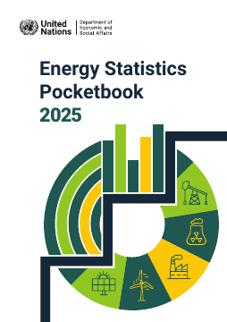

M03-AD-0302
¿De dónde proceden las emisiones industriales?
En una cementera, el molino consume electricidad, el horno necesita calor y la caliza libera CO₂ al transformarse en clínker. Incluso con un horno alimentado por calor solar, la reacción de la caliza seguiría produciendo CO₂.
Tres formas de seguir las emisiones
- Combustión directa. El gas de una caldera o el gasóleo de una excavadora liberan CO₂ allí donde se queman.
- Proceso industrial. Una reacción puede liberar gases de efecto invernadero al transformar la materia prima. La calcinación de la caliza es un ejemplo.
- Energía comprada. Cuando una fábrica compra electricidad o vapor, parte de sus emisiones puede producirse en la central que los suministra. Al sumar fábrica y central, esas emisiones deben contarse una sola vez.
¿Qué industrias consumen cada fuente de energía?
Imagina que repartimos 100 unidades de energía final entre todas las industrias del mundo. Cada celda indica cuántas unidades corresponden a una rama y a una fuente a la vez. La última columna da el peso mundial de cada rama y la última fila, el de cada fuente.
| Actividad | Electricidad | Gas natural | Carbón y derivados | Petróleo y derivados | Biocombustibles y residuos | Calor | Total de la rama |
|---|---|---|---|---|---|---|---|
| Hierro y acero | 3,4 | 1,9 | 9,7 | 0,2 | 0,2 | 0,4 | 15,8 % |
| Química y petroquímica | 3,6 | 5,4 | 1,2 | 1,6 | 0,2 | 3,1 | 15,0 % |
| Metales no férreos (incluido el aluminio) | 1,2 | 0,5 | 0,6 | 0,2 | <0,1 | <0,1 | 2,5 % |
| Minerales no metálicos (incluidos cemento y vidrio) | 0,7 | 1,6 | 5,1 | 1,1 | 0,4 | 0,1 | 9,0 % |
| Otras industrias Entre ellas: data center, papel y pasta, alimentación y textil. | 19,7 | 13,2 | 8,8 | 6,2 | 7,3 | 2,5 | 57,7 % |
| Total de la fuente | 28,6 | 22,5 | 25,4 | 9,3 | 8,0 | 6,2 | 100,0 % |

Naciones Unidas · Balance energético mundialEnergy Statistics Pocketbook 2025 · Abrir las págs. 46–47 del informe en otra pestaña ↗
Cómo leer el acero. De cada 100 unidades de energía industrial mundial, 15,8 se destinan al hierro y al acero. De esas 15,8 unidades, unas 9,7 proceden del carbón y sus derivados. Dentro de la propia siderurgia, eso equivale a cerca del 61 % (12,7 de 20,7 EJ).
Qué cambia al mirar otra rama. En química y petroquímica, el gas natural aporta unos 7,0 EJ de 19,6 EJ, aproximadamente el 36 % de la energía de la rama. El balance excluye usos no energéticos como la materia prima para plásticos. Para traducir estos consumos a emisiones también hay que conocer cómo se generaron la electricidad y el calor y qué gases liberó el proceso.
Datos, agrupaciones y cálculo
Dividimos los exajulios publicados de cada cruce por 130,7 EJ y multiplicamos por 100. Sumamos el carbón primario y sus derivados, y el petróleo primario y sus derivados. Los consumos positivos indicados como trazas en el petróleo primario quedan por debajo de la precisión mostrada. Las cuotas de los márgenes se calculan con los totales publicados. El redondeo puede producir pequeñas diferencias al sumar.
Naciones Unidas agrupa química con petroquímica, aluminio con otros metales no férreos y cemento con vidrio y otros minerales no metálicos. Papel, alimentación y minería carecen de fila propia en esta tabla resumida. Los centros de datos pertenecen a servicios. La fuente mundial combina biocombustibles y residuos en una columna. El gráfico europeo posterior emplea otra clasificación y otro año.
Comparación regional · Unión Europea, 2024
De cada 100 unidades de energía final que utilizó la industria europea en 2024, unas 65 llegaron como electricidad o gas natural. Para pasar de energía a emisiones hay que conocer el combustible o la forma de generación y contabilizar aparte las reacciones industriales.
Qué energía utiliza la industria de la UE
2024 · Porcentaje del consumo final de energía industrial. Escala de las barras: 0–40%.
Las barras muestran la referencia europea. Cada barra enlaza con la matriz mundial.
- Electricidad33,3%
- Gas natural31,9%
- Renovables y biocombustibles11,3%
- Petróleo y productos petrolíferos10,4%
- Combustibles fósiles sólidos5,5%
- Calor derivado5,5%
- Residuos no renovables2,1%
Fuente: Eurostat, nrg_bal_s. Porcentajes de la figura 1 de Eurostat, extracción de mayo de 2026. La fuente numérica es la figura 1 publicada. Traducción y representación de NHMA.
¿Qué cambia de una actividad a otra?
La primera columna identifica la energía y su uso. La segunda sigue el carbono u otros gases en una operación representativa. Las rutas de fabricación pueden variar incluso dentro de una misma rama.
| Actividad | Energía y uso | Dónde se emite |
|---|---|---|
| Acero | Coque en el alto horno o electricidad para fundir chatarra. | La reducción del mineral con carbono libera CO₂. En la ruta de chatarra cobra peso la generación eléctrica. |
| Cemento | Combustible en el horno y electricidad en la molienda. | La combustión y la descomposición de la caliza son dos fuentes distintas de CO₂. |
| Química | Gas natural para obtener hidrógeno y aportar calor en la fabricación convencional de amoníaco. | Obtener hidrógeno a partir de gas genera CO₂. En otra rama, la fabricación de ácido nítrico, también se produce óxido nitroso. |
| Petroquímica | Combustible para calentar el horno de craqueo que produce etileno. | El horno emite CO₂. Parte del carbono de la materia prima queda en el producto. |
| Aluminio | Electricidad para obtener aluminio primario por electrólisis. | Importan la generación eléctrica y el CO₂ liberado al consumirse los ánodos de carbono. Refundir chatarra evita esa electrólisis. |
| Vidrio | Gas o electricidad para fundir la mezcla. | Los hornos de gas emiten por combustión. Los carbonatos de la mezcla también pueden liberar CO₂. |
| Papel y pasta | Vapor para secar el papel y electricidad para accionar las máquinas. | Las emisiones del vapor dependen de la caldera. Algunas fábricas de pasta queman licor negro, un subproducto con carbono biogénico. |
| Alimentación | Calor para cocer o pasteurizar y electricidad para refrigerar. | Una caldera de gas emite en la planta. La electricidad comprada lleva asociadas las emisiones de su generación. |
| Minería | Gasóleo para vehículos y electricidad para triturar, moler y bombear. | El gasóleo emite en la mina. En minas de carbón también puede escapar metano del yacimiento. |
| Centros de datos | Electricidad para servidores y refrigeración. | Las emisiones dependen de la generación eléctrica y del uso de grupos de respaldo. Es un caso de servicios digitales, fuera del gráfico industrial. |
Fuentes de la tabla de actividades. Síntesis de NHMA. El IPCC documenta la combustión y las fugas en Energía (vol. 2) y las reacciones de los minerales, la química y los metales en Procesos industriales (vol. 3, caps. 2–4). Para servicios digitales, véase la Comisión Europea sobre centros de datos.
Fuentes y alcance
- Naciones Unidas · Energy Statistics Pocketbook 2025, págs. 46–47. El balance mundial de 2022 proporciona los consumos en exajulios de la matriz. Los porcentajes se calculan sobre los 130,7 EJ de consumo final industrial. La ONU publica 75,4 EJ para «Otras industrias» y en este cuadro no desglosa cuánto corresponde a cada actividad del grupo.
- Eurostat · Consumo final en la industria. Figura 1, consumo final industrial por producto energético en la UE en 2024. La energía se mide en julios y las emisiones en masa de gas.
- IPCC · Energía y procesos industriales. Métodos para distinguir combustión, fugas y transformación de materiales.
- Agencia Europea de Medio Ambiente · EU ETS. Emisiones verificadas de las instalaciones cubiertas, por actividad, país y año.
- Comisión Europea · Centros de datos. Estadísticas específicas de consumo y rendimiento energético.